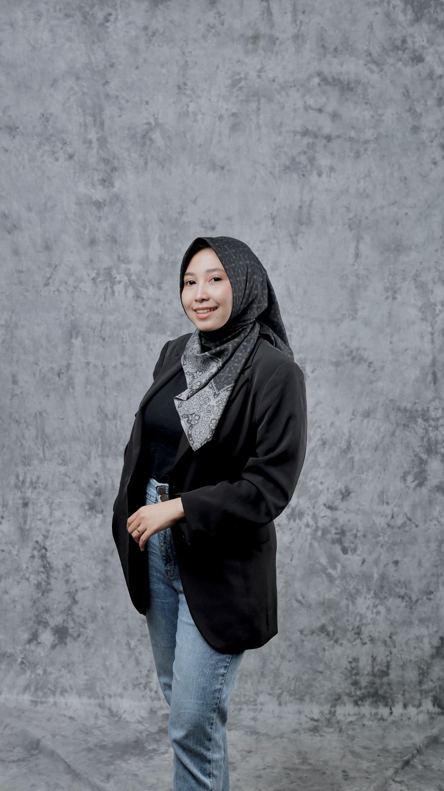

S.E., M.M. — Membangun generasi manajer yang cerdas, berbasis data, dan memiliki pemikiran strategis yang modern.
"Menggabungkan teori akademik dengan sentuhan praktis untuk menciptakan solusi manajemen yang relevan di era digital."

Afiliasi
FEB UJB
Riset Berbasis Data & Inovasi Sistem.
Nadia Syafa’at adalah dosen pada Program Studi Manajemen Fakultas Ekonomi dan Bisnis Universitas Janabadra yang berfokus pada pengembangan ilmu manajemen berbasis riset dan pendekatan empiris.
Dengan pendekatan akademik yang feminin namun tegas dan kuat, ia mengintegrasikan teori dan praktik untuk menghasilkan pembelajaran yang relevan dengan kebutuhan industri modern. Aktivitas akademiknya mencakup penelitian, publikasi ilmiah, serta pengembangan model manajemen berbasis data.
Kajian strategis dengan sentuhan analitik untuk pengembangan manajemen modern.
Analisis mendalam mengenai perumusan, implementasi, dan evaluasi keputusan lintas fungsional yang memastikan organisasi mencapai tujuannya.
Pemanfaatan analitik dan metrik objektif yang cantik untuk memandu arah perusahaan, mengurangi bias, dan meningkatkan akurasi.
Pengembangan indikator dan metode pengukuran komprehensif untuk menilai efektivitas dan efisiensi operasional secara elegan.
Studi tentang adaptasi struktur baru dan praktik inovatif dalam merespon perubahan lingkungan bisnis yang dinamis.
Investigasi empiris terhadap dinamika individu dan kelompok di dalam struktur organisasi, berfokus pada motivasi, kepemimpinan, dan budaya kerja guna meningkatkan kinerja keseluruhan yang harmonis.
Jelajahi berbagai kontribusi penelitian yang berfokus pada pengembangan sistem, evaluasi, dan pendekatan manajemen berbasis bukti (*evidence-based*).
Kunjungi Google ScholarMata kuliah utama yang diampu di FEB UJB:
Terbuka untuk inisiatif akademik & profesional: